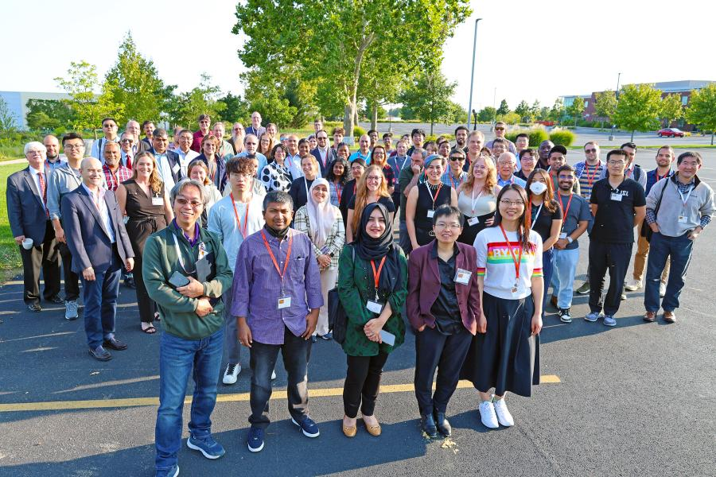

The 2024 National Science Foundation's Harnessing the Data Revolution (HDR) Ecosystem Conference wrapped up at the University of Illinois Urbana-Champaign, marking a week of collaboration among leaders in AI, data science, and biodiversity research.
The annual conference brought together researchers, students, and industry experts from across the nation to share breakthroughs and tackle challenges in data-driven discovery.
This year's event featured contributions from HDR Institutes, including Imageomics, A3D3, ID4, and iHARP, as well as the Data Science Corps (DSC) and Trans-disciplinary Research in Principles of Data Science (TRIPODS).
From Sept. 9 to 13, the conference highlighted achievements such as AI-powered biodiversity studies by Imageomics Director Tanya Berger-Wolf from The Ohio State University and advancements in machine learning for global challenges, presented by keynote speaker Vipin Kumar from the University of Minnesota.
Researchers also explored responsible AI, infrastructure development, and workforce expansion as part of a nationwide effort to build a cohesive, 21st-century data science ecosystem.
"The HDR ecosystem is growing stronger, and the future looks brighter," said Mark Neubauer, conference chair. "We're excited for what comes next."
The main goals of the event were to strengthen relationships within the HDR community, share institute progress, and identify new opportunities to integrate AI into data-intensive research.
Discussions also assessed ongoing initiatives in AI and data science infrastructure, with particular attention to their impact on areas like climate change, species discovery, and human health.
As the conference came to a close, the focus shifted toward the future. Key next steps include the formal launch of the HDR Machine Learning Challenge and ongoing collaborations between HDR groups.
Plans are already in motion for the 2025 conference, which aims to further propel data science research into the next frontier.